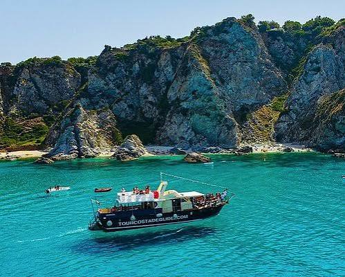

CityLoop Quest — Tropéa


Le matin offre la lumière la plus claire sur les façades et une température agréable dans les ruelles. Les plages sont encore calmes, les livraisons animent les commerces et les habitants disposent leurs produits avant l’arrivée du gros de la fréquentation.
À midi, le soleil peut devenir dur en été. C’est le bon moment pour visiter une église, un musée ou déjeuner à l’ombre. Les façades perdent du relief, mais l’eau prend une couleur presque transparente vue depuis les belvédères.
La fin d’après-midi appartient à la passeggiata. Les rues se remplissent progressivement, les enfants jouent sur les places et les terrasses changent d’ambiance. Le coucher du soleil est particulièrement spectaculaire lorsque Stromboli se dessine à l’horizon.
Le printemps et le début de l’automne combinent souvent mer agréable, sentiers accessibles et fréquentation plus douce. L’hiver révèle une ville très différente : certains services ferment, mais les tempêtes, les lumières basses et la vie locale donnent au promontoire une force particulière.
Vérifiez enfin le calendrier des fêtes. I Tri da Cruci en mai, les célébrations mariales et les événements gastronomiques peuvent enrichir le séjour, tout en modifiant circulation et horaires. À Tropéa, choisir le bon moment signifie autant choisir une saison qu’une heure.